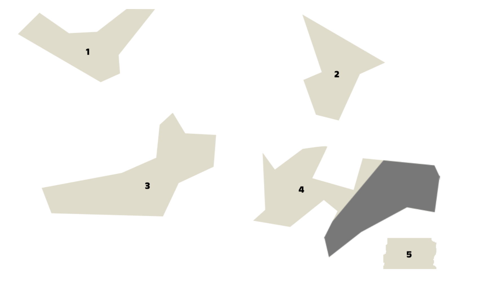
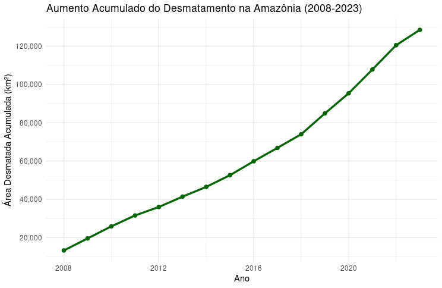

Área Desmatada
Sabemos que o tamanho total da área desmatada no território referente a Amazônia Legal tem só crescido a cada ano. Só entre os
anos de 2008 e 2020 a área total desmatada foi de 128,506 km².
Ao ler esse valor podemos pensar algo como "Bom, com certeza é uma área grande"
mas é um número que pode ser um tanto quanto abstrato ao passarmos os nossos olhos rapidamente sobre ele. Para torna-lo mais visual, pense da seguinte forma:
Esse valor é superior a área somada de estados brasileiros inteiros.
Sendo ainda mais objetivo, pense na área dos territórios abaixo:
- Alagoas
- Sergipe
- Rio de Janeiro
- Metade do território da Paraíba
- Distrito Federal

Com essa soma teríamos o equivalente a 127,518 km², ainda abaixo dos 128,506 km² desmatados entre os anos de 2008 e 2023.
Segue abaixo, um gráfico com o desmatamento acumulativo entre os anos citados:

Nem tudo está perdido
De fato os números são chocantes e a primeira vista, com as informações acima, podemos ficar assustados e desanimados. No entanto, observe o gráfico abaixo, com valores de desmatamento separados anualmente:

Analisando o gráfico, percebemos que, mesmo em um momento conturbado na relação entre o homem e o meio ambiente em todo o mundo, ainda houve
uma redução de 36,8% no desmatamento no intervalo de 1 ano — entre 2022 e 2023 — graças às ações tomadas pelos órgãos responsáveis.
Isso mostra que, apesar de um cenário difícil, se as medidas corretas forem adotadas a tempo, ainda é possível tomar as rédeas da situação.